The free breadboard-to-PCB designer that runs on your phone.
Build a circuit on a virtual breadboard, draw the schematic, lay out a PCB and watch it run in a live simulator, on your laptop or your phone. Free and open source.
MIT licensed. macOS, Windows and Linux downloads, or run it in a phone browser. Works offline, no account.
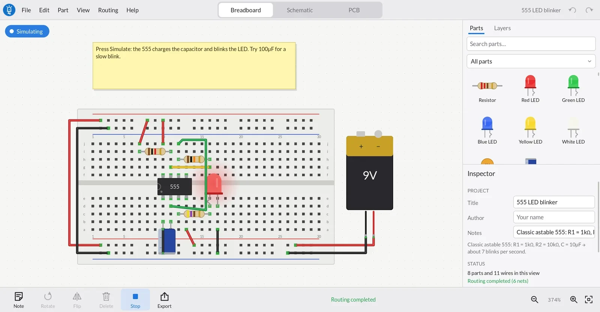

Everything from idea to PCB
One app, three linked views, one file you can share.
- Breadboard, schematic & PCB
- Every connection you make in one view shows up in the others as a dashed ratsnest line until you wire it there too.
- Live simulation
- LEDs glow, 555s blink, logic clocks, op-amps amplify, meters read volts, and overloaded parts smoke, with an explanation.
- Ready for the fab
- Two-layer autorouter, design-rules check and one-click Gerber + drill export you can upload to any PCB maker.
- 178 real parts
- Arduino, ESP32, Raspberry Pi & Pico boards, 74HC/CD4000 logic, op-amps, regulators, drivers, sensors and displays, all true to size.
- Version history & GitHub
- Every save is a version you can restore. Optionally commit designs to your own private GitHub repository.
- Program the boards
- Write an Arduino sketch for an Uno, ESP32 or Pico, watch it run line by line with a Serial Monitor, then upload it to the real board.
- Build by chatting
- The AI tab drives Claude Code (or Codex, Gemini…) to build circuits live in your design. An MCP server lets any AI app do the same.
- Made for touch too
- On phones the panels become drawers; pan with a finger, pinch to zoom, long-press for menus.
- Layers
- A Photoshop-style Layers panel: toggle copper and silkscreen, hide or lock parts, find anything by name.
- One shareable file
- A
.dezdesign is plain JSON that embeds every part it uses. It opens offline in any copy of the app.
A closer look
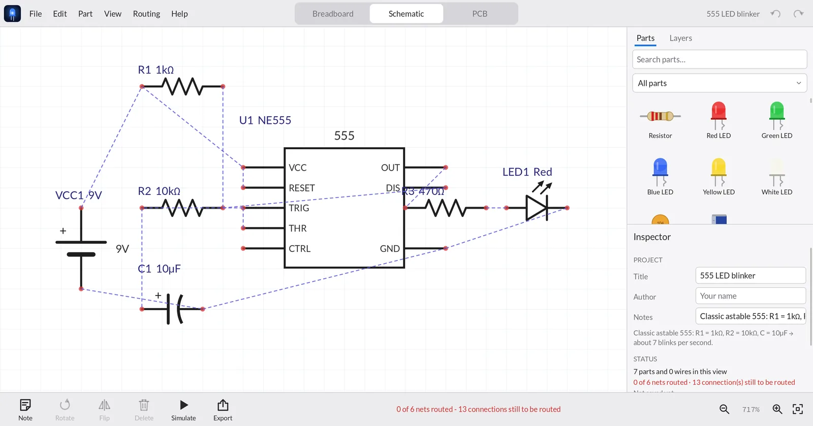
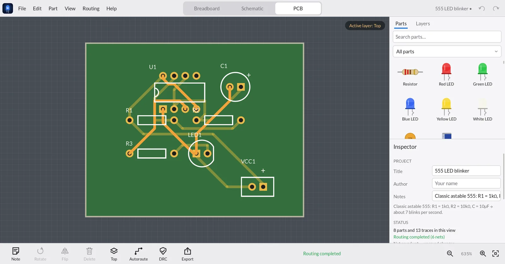
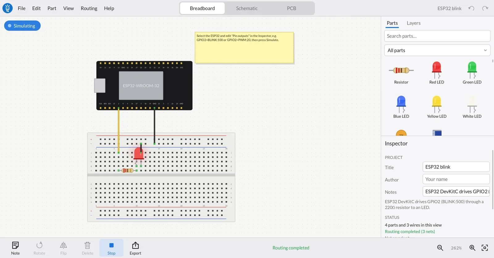
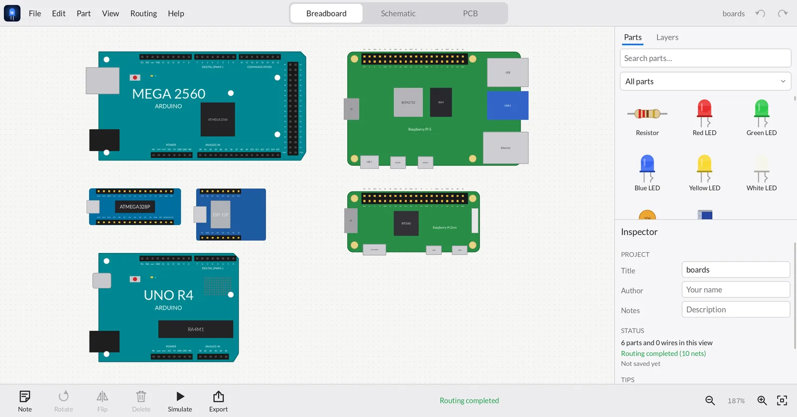
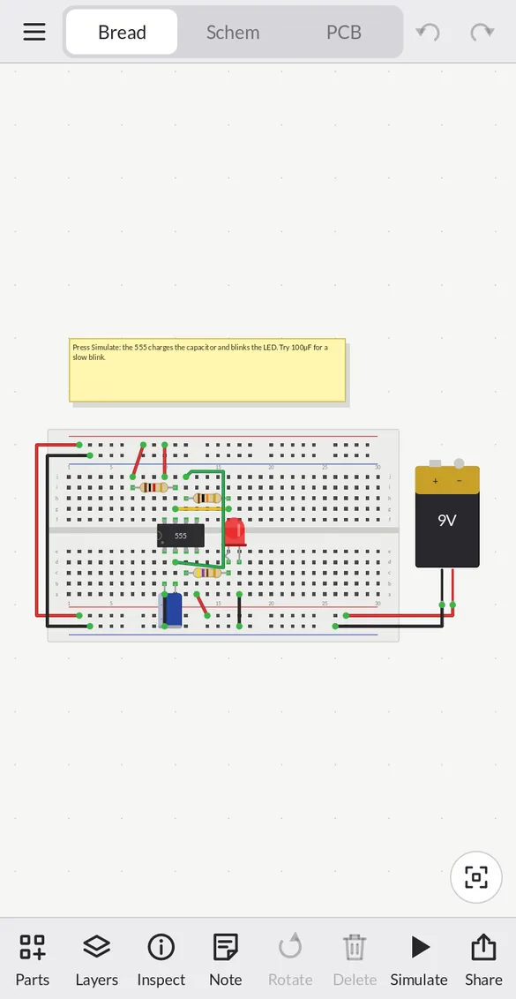
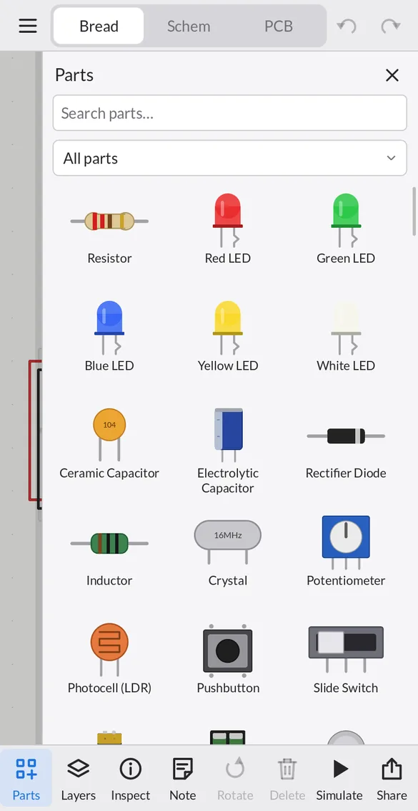
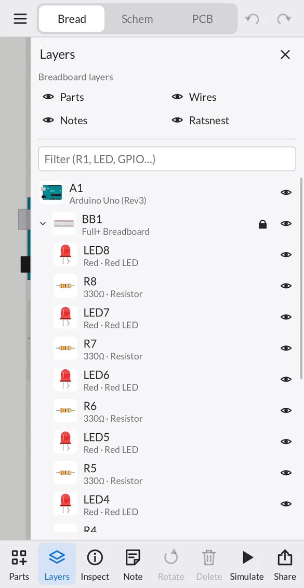
Tip: press Simulate in the toolbar; on a phone use the Parts, Layers and Inspect buttons. Uploading to a real board and GitHub sync need the desktop app.
Download
Free, about 3–7 MB, no installer and no account. Built automatically from the source on GitHub and tested on every platform.
| System | Requirements | |
|---|---|---|
| macOS | macOS 11 or newer · Apple Silicon & Intel | Download .zip |
| Windows | Windows 10 / 11 · 64-bit | Download .zip |
| Linux | x86_64 · Ubuntu 22.04+ or similar · X11 / Wayland | Download .tar.gz |
All releases and release notes
First launch
The downloads aren't code-signed yet, so your system asks once before opening them:
- macOS: unzip, move
designElectronics.appto Applications, then right-click ▸ Open ▸ Open. If macOS says the app is damaged, runxattr -dr com.apple.quarantine /Applications/designElectronics.apponce. - Windows: unzip and run
designElectronics.exe; if SmartScreen appears, choose More info ▸ Run anyway. Keep theassetsfolder next to the exe. - Linux:
tar xzf designElectronics-Linux-x86_64.tar.gz && ./designElectronics/designElectronics
Then open File ▸ Examples or follow the quick start.
Build from source
designElectronics is a native app written in C++ with SDL3. Building takes a few minutes.
brew install cmake sdl3 sdl3_ttf
git clone https://github.com/rORrEtboLt/designElectronics.git
cd designElectronics
cmake -S . -B build -DCMAKE_BUILD_TYPE=Release
cmake --build build -j
open build/designElectronics.app# Debian / Ubuntu 24.10+ (older releases: build SDL3 from source, see docs/BUILDING.md)
sudo apt install build-essential cmake git libsdl3-dev libsdl3-ttf-dev libcurl4-openssl-dev
git clone https://github.com/rORrEtboLt/designElectronics.git
cd designElectronics
cmake -S . -B build -DCMAKE_BUILD_TYPE=Release
cmake --build build -j
./build/designElectronics# with vcpkg (or let CMake download SDL: -DDE_VENDOR_SDL=ON)
vcpkg install sdl3 sdl3-ttf curl
git clone https://github.com/rORrEtboLt/designElectronics.git
cd designElectronics
cmake -S . -B build -DCMAKE_TOOLCHAIN_FILE=%VCPKG_ROOT%/scripts/buildsystems/vcpkg.cmake
cmake --build build --config Release
build\Release\designElectronics.exeOn a phone, open the web app in your browser. There's nothing to install, and the layout adapts to small screens and touch. Native iOS and Android apps aren't in the app stores yet. To build them yourself you need Xcode or Android Studio; follow docs/BUILDING.md. On phones, GitHub sync isn't available yet; local version history works.
Check your build
# macOS: ./build/designElectronics.app/Contents/MacOS/designElectronics --selftest
./build/designElectronics --selftestThe self-test checks every part, the simulator (555 timing, logic, op-amps, comparators…), routing, DRC, version history and every exporter, and ends with All tests passed.
Quick start: your first circuit
Light an LED from a battery in about two minutes. On a phone, tap Parts in the toolbar to open the parts drawer.
- Start a design. File ▸ New gives you a breadboard. Want a shortcut? File ▸ Examples has ready-made circuits. Start with LED with battery or 555 LED blinker.
- Add parts. Search the parts bin for Resistor, Red LED and Battery and drag each onto the canvas. Drop the resistor and LED so their legs sit in breadboard holes. Holes in use light up green.
- Set values. Click the resistor and change Resistance to
220Ωin the Inspector. Set the battery to3V. - Wire it. Drag from a battery terminal to a breadboard hole to draw a wire. Each column of five holes (a–e and f–j) is connected, so put the resistor, the LED's long leg (anode) and the battery's + in a chain, and the LED's short leg back to −.
- Simulate. Press Simulate in the toolbar. The LED glows; hover a pin to see its voltage. Swap in a 10 Ω resistor and the LED smokes, with a warning that 47 mA is too much for it.
- Save & share. File ▸ Save As / Share… writes one
.dezfile. Send it to anyone with designElectronics and it opens offline on any platform.
Then try
- Draw the schematic: your breadboard connections are already there as dashed lines.
- Make a PCB and export Gerbers.
- Open File ▸ Examples ▸ ESP32 blink or Raspberry Pi LED and change the board's Pin outputs.
Design
A design has three linked views. Switch with the tabs at the top of the app or Ctrl/⌘+1 2 3. A connection made in any view counts in all of them; views where it isn't wired yet show a dashed ratsnest line. Click it to turn it into a wire or trace.
Breadboard view
- Choose a Half+, Full+ or Mini breadboard in the Inspector. Columns of five holes (a–e, f–j) are connected; the long red/blue rails carry power.
- Drop a part so its legs line up with holes and it plugs in. Chips straddle the centre gap. Moving a breadboard carries everything plugged into it.
- Drag from any hole or pin to draw a jumper wire; pick its colour in the Inspector. Drag the middle of a wire to bend it; double-click a bend to remove it.
- Wire ends are green when connected and red when loose.
- Boards that are too wide for a breadboard (Arduino Uno, ESP32 DevKitC, Raspberry Pi) sit beside it and connect with jumpers.
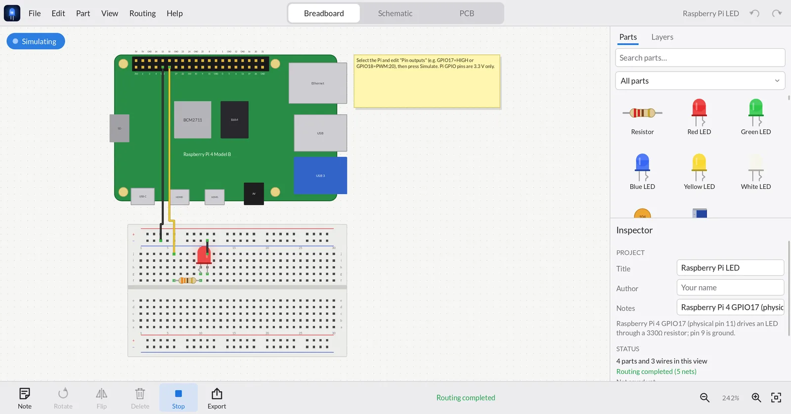
Schematic view
- Every part has a schematic symbol. Arrange them, then click each dashed ratsnest line (or drag pin to pin) to draw wires.
- Add Ground, Power Label and Net Label symbols from the Schematic category: symbols with the same name are connected, so you don't have to draw long wires.
- Junction dots appear automatically where three or more wires meet. Red dots mark pins that aren't connected yet.
- The status line tells you how many nets are still unrouted in this view.
PCB view
- Size the board. Select the board outline and set width × height in mm and one or two layers in the Inspector. Add mounting holes from the PCB category.
- Place footprints. Arrange parts inside the outline; R rotates and F flips. Ratsnest lines show what needs connecting.
- Route. Press Autoroute (two layers with vias, clearance-aware), or draw traces yourself. Routing ▸ Active Layer and Trace Width set what you draw.
- Check. Press DRC: clearance problems, parts off the board and overlapping footprints are circled in red.
- Export. File ▸ Export ▸ Gerber files for PCB manufacturing (.zip) writes RS-274X Gerbers and an Excellon drill file you can upload to JLCPCB, PCBWay, OSH Park and others.
Layers panel
Open the Layers tab next to Parts (on phones: the Layers button in the toolbar).
- View layers: eye toggles for what's drawn: parts, wires, notes and ratsnest; on the PCB, board, top copper, bottom copper, pads, silkscreen and labels.
- Everything in the design: parts plugged into a breadboard are grouped under it. Click to select, Shift-click to add, double-click to zoom to a part. Filter by label, value or pin name (try
GPIO). - Hide a part in the current view (the eye). Hiding is visual only: the part still connects, simulates and exports.
- Lock a part so it can't be moved, rotated or deleted. Handy for the breadboard or the board outline.
- Badges: orange = unrouted connections in this view, hollow = no simulation model, red = damaged in simulation, coloured = live LED brightness.
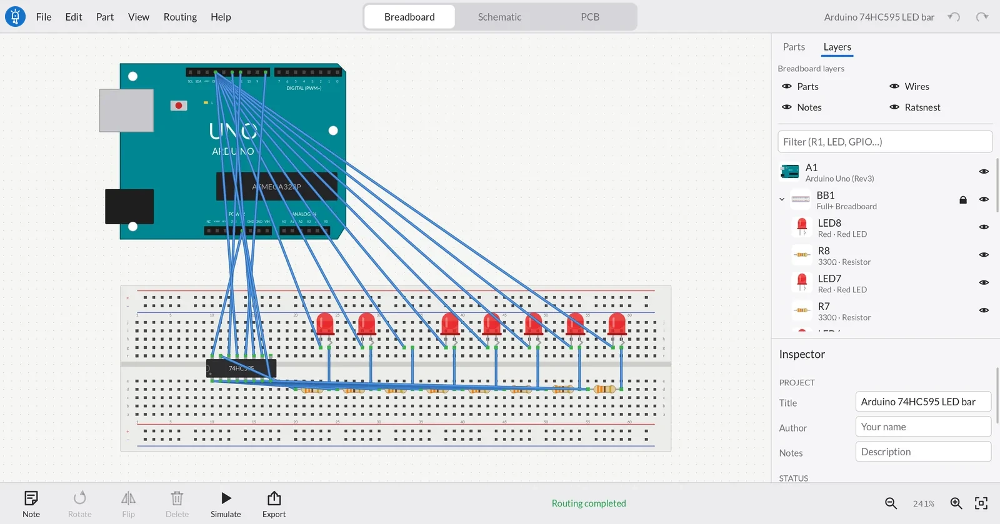
Editing
- Undo/redo everything; copy, cut, paste and duplicate (the clipboard is JSON, so you can paste between windows).
- Rubber-band select by dragging on empty canvas; arrow keys nudge (Shift = 10×).
- Right-click (or long-press) a part for its context menu: rotate, flip, bring to front/back, export the part definition.
- Notes are sticky notes on the canvas, useful for explaining a circuit to whoever you share it with.
- Designs autosave continuously, so nothing is lost if the app (or your phone) closes it.
Simulate
Press Simulate to run your circuit in real time (1 ms steps). Hover a pin to read its voltage; hold a pushbutton down to press it. Press Stop to edit again.
| What you'll see | Parts |
|---|---|
| LEDs glow with real brightness, RGB LEDs mix colours, 7-segment displays light up | LEDs, RGB LEDs, 7-segment displays (directly or through a CD4511) |
| Capacitors charge, timers oscillate | 555 / 556, RC circuits |
| Logic follows its truth table and clocks | 74HC and CD4000 gates, flip-flops, counters (4017, 74HC393), shift registers (74HC595), decoders |
| Amplifiers and comparators | LM358, LM324, LM741, TL072, LM393, LM339, LM386 |
| Power | Batteries, 78xx / LM317 / AMS1117 regulators, buck and boost modules |
| Things that move or make noise | DC motors spin, buzzers sound, relays click (ULN2003, L293D, L298N drivers) |
| Measurements | Multimeter reads volts or amps |
| Sensors from a value you set | LM35/TMP36 temperature, photocell light level, PIR, soil moisture, joystick, potentiometer |
Microcontroller boards
Boards supply their power rails (5V, 3V3, GND). Give a board a real program in the Code tab. Or, for a quick test, drive pins without code by listing them in the Inspector under Pin outputs:
GPIO2=HIGH # steady high (3.3 V on ESP32/Pi, 5 V on Uno/Mega)
D13=LOW
GPIO17=BLINK:500 # toggle every 500 ms
D9=PWM:30 # 30 % duty, simulated as the average voltageSeparate several with commas: D11=HIGH, D12=BLINK:40, D8=BLINK:40.
Program your board
Every microcontroller board (Arduino, ESP32, ESP8266, Raspberry Pi Pico, STM32, Teensy…) can hold an Arduino sketch. It's saved inside the design, runs in the simulator, and uploads to a real board.
- Select the board and click Write a program… in the Inspector (or right-click the board ▸ Edit Program…). You get a ready-to-run blink sketch for that board.
- Press ▶ Run. The program runs in step with the circuit: LEDs follow
digitalWrite,digitalReadsees your buttons,analogReadmeasures real voltages, and the line that's executing is highlighted. - Watch
Serial.printoutput in the Serial Monitor, and type into it to send text toSerial.read(). - Edit while it runs and the board restarts with your changes. Mistakes are underlined with the line and a plain-English message, like a compiler would.
What runs in the simulator
| Supported | Examples |
|---|---|
| Language | int long float bool byte char String, arrays, functions, if/for/while/do/switch, #define, const, enum |
| Pins | pinMode (incl. INPUT_PULLUP), digitalWrite/Read, analogRead/Write, tone/noTone, shiftOut/shiftIn, ESP32 ledcAttach/ledcWrite |
| Time | delay, delayMicroseconds, millis, micros |
| Serial | begin, print/println (DEC/HEX/BIN, decimals), printf, available/read/readString/parseInt |
| Helpers | map, constrain, min/max/abs, math, random, bitRead/bitWrite/bitSet, String methods |
2 is GPIO2 on an ESP32, 13 is D13 on an Uno, D4 works on a NodeMCU, PC13 on a Blue Pill. OLED displays driven with Adafruit_SSD1306 / SH1106 show the sketch's text and graphics on the OLED part. Other library calls the simulator can't model (WiFi, Servo, LCD…) are skipped with one grey note per library. The sketch still compiles and runs for real when you upload it.Upload to a real board
Click Upload to board…. designElectronics uses arduino-cli, the engine of the Arduino IDE. If you have Arduino IDE 2 installed it's found automatically, or install arduino-cli (brew install arduino-cli, winget install ArduinoSA.CLI). Pick the USB port, press Compile & Upload, and follow the log. Install board support fetches the ESP32, ESP8266, Pico, STM32 or Teensy core the first time. Uploading works in the desktop apps; in the browser use Export .ino.
Parts library
178 parts in 17 categories, searchable from the parts bin. Boards are drawn true to size with their real pinouts.
| Category | Highlights |
|---|---|
| Microcontroller boards | Raspberry Pi 5, 4, 3, Zero / Zero 2 W (40-pin header), Pico, Pico W, Pico 2 · Arduino Uno, Uno R4 Minima/WiFi, Leonardo, Mega 2560, Due, Nano, Nano Every, Nano 33 IoT/BLE, Nano ESP32, Nano RP2040 Connect, Micro, Pro Mini, Pro Micro, MKR WiFi 1010 · ESP32 DevKitC, DevKit V1, S3, C3 SuperMini, ESP32-CAM, NodeMCU, Wemos D1 Mini · STM32 Blue Pill / Black Pill, Teensy 4.0, Seeed XIAO, Adafruit Feather |
| Microcontroller chips | ATmega328P, ATtiny85/84, PIC12F675, PIC16F628A |
| Logic | 74HC00/02/04/08/10/11/14/20/32/86/125/74/138/165/245/393/595/4051 · CD4001/4011/4013/4017/4066/4069/4070/4071/4081/4093/4511 |
| Analog | LM358, LM324, LM741, TL072, NE5532, MCP6002, LM393, LM339, NE555/556, LM386, TL431, PC817, 4N35, MAX232 |
| Drivers & power | ULN2003/2803, L293D, L298N, A4988, DRV8825, relay module, TIP120, IRF540N · 7805, 78L05, LM317, AMS1117, LM2596, MT3608, TP4056 |
| Sensors & modules | LM35, TMP36, DS18B20, DHT11/22, HC-SR04, PIR, MPU-6050, BMP/BME280, VL53L0X, soil moisture, MQ-2, joystick, Hall, IR, sound, HC-05, RC522, NEO-6M, nRF24L01, ADS1115, DS3231 |
| Displays | 7-segment (CC/CA), RGB LED, SSD1306 OLED, LCD 16×2 (+I²C), TM1637, MAX7219 matrix, WS2812B, ST7735 |
| Basics | Resistors, LEDs, capacitors, diodes, inductors, crystals, transistors, MOSFETs, switches, buttons, potentiometers, LDRs, buzzers, motors, batteries, headers, breadboards, a generic DIP IC with any pin count |
Custom parts
Right-click a part ▸ Export Part Definition… saves it as a .dezpart JSON file. Edit the graphics, pins or simulation model, then File ▸ Import Part. Custom parts are embedded in every design that uses them, so shared files always open. A custom chip can even declare its own simulation, for example a quad NAND as VCC=14;GND=7;NAND 1,2>3;…. See the file format.
Version history & GitHub
Versions on your device
Every time you save, a version is kept, with a summary of what changed (“R1 resistance 220Ω → 330Ω · Added LED2”) and the note you gave it. Open File ▸ Version History… (Ctrl/⌘+Shift+H):
- Restore brings an old version back into the open design. It's undoable; save to keep it.
- Open copy opens an old version as a new, separate design.
History works offline on every platform, follows the design if you rename or move the file, and keeps the newest 200 versions.
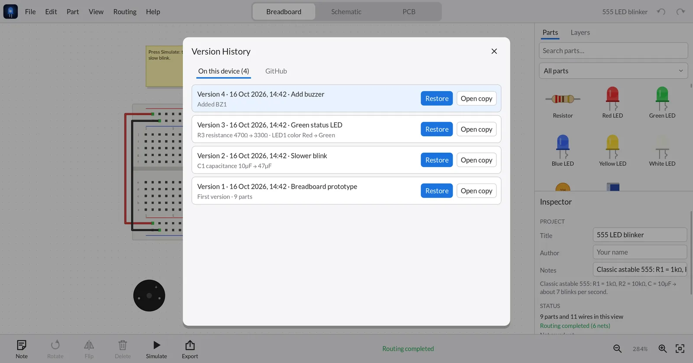
Commit to GitHub (optional)
- Connect. File ▸ Connect GitHub… For now you paste a fine-grained personal access token (the window links to the GitHub page and lists the permissions it needs: Contents: read & write, plus Administration so the app can create a private repository). A one-click “Sign in with GitHub” is coming.
- Commit. File ▸ Commit to GitHub… (Ctrl/⌘+Shift+K), describe the change, and push.
- Browse. The GitHub tab in Version History lists every commit of the design. Restore one or open it as a copy, from any device.
electronics-designs by default), each design in its own folder. You can also give a design its own repository. Turn on Commit automatically every time I save in the account window if you like. Your token is stored only on your device.Share: videos, GIFs and blog embeds
Videos and GIFs for Instagram, YouTube and TikTok
File ▸ Export ▸ Video or GIF for social media… records your circuit with the simulation running, so LEDs blink and displays count, in the shape each platform wants:
| Format | Size | Use it for |
|---|---|---|
| Reels / Shorts | 9:16 · 1080×1920 | Instagram Reels, YouTube Shorts, TikTok, Stories |
| Instagram post | 4:5 · 1080×1350 | Feed posts |
| Square | 1:1 · 1080×1080 | Feeds, X / Twitter, LinkedIn |
| YouTube | 16:9 · 1920×1080 | YouTube videos, presentations |
Choose MP4 (H.264, 30 fps, uploads everywhere) or an animated GIF (half size, 15 fps, for chats, READMEs and blog posts), the view (or a tour through breadboard → schematic → PCB), the length and a title. Videos are rendered frame by frame with real simulation timing, entirely on your device.
Made with Export ▸ Video
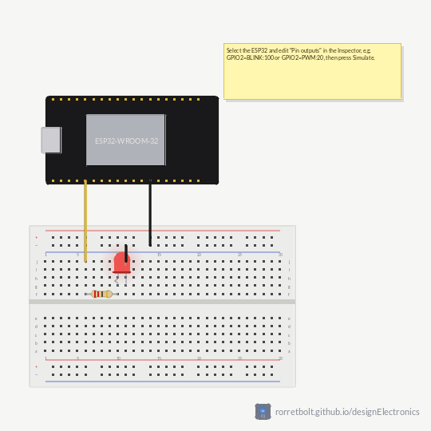
Embed circuits in your blog
Put a live, interactive circuit in any web page with an <iframe>. Readers can switch between breadboard, schematic and PCB, pan and zoom, and press Simulate right in your post. This is one, live:
- In the app, open your design and choose File ▸ Embed in a Website…
- Pick the view it should start in, whether it starts simulating, and the size.
- Click Copy embed code and paste it into your page's HTML (WordPress “Custom HTML” block, Ghost/Hugo/Jekyll markdown, Notion embed…).
<iframe src="https://rorretbolt.github.io/designElectronics/embed/#d=…&view=breadboard"
width="800" height="500" style="border:1px solid #ddd;border-radius:8px"
loading="lazy" allowfullscreen></iframe>Link options
After # | Meaning |
|---|---|
d=… | The design itself (made by Embed in a Website) |
src=https://…/design.dez | Load a hosted .dez file instead, e.g. from a GitHub repo (raw.githubusercontent.com) or a gist. Handy for very large designs, and the embed updates when you update the file. |
example=0…6 | A built-in example |
view=breadboard|schematic|pcb | Start view |
sim=1 | Start simulating |
Join options with &, for example embed/#example=4&view=pcb. The embed's Open in editor button opens the same design in the web editor (the App tab), where readers can change it and save their own copy. Share a design with Copy editor link in the embed window.
Build circuits by chatting with your AI
Open the AI tab (next to Parts and Layers) and describe what you want: “a traffic light with an Arduino Nano”, “add a button that turns the LED on”, “make a PCB for this”. The AI tool you already use on your computer builds it in the open design while you watch: it picks parts, plugs them into the breadboard, wires them, writes the board's sketch and runs the simulation to check its work.
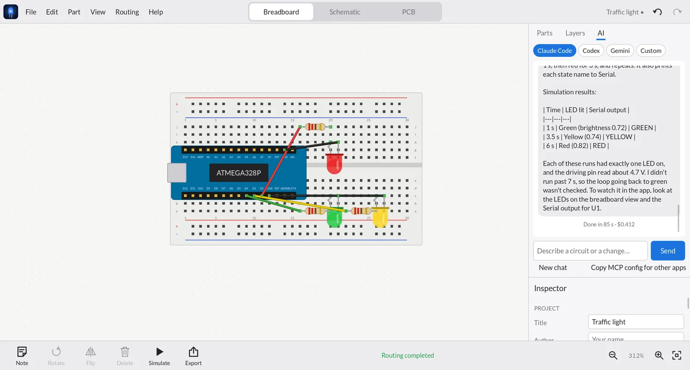
| Agent | Setup |
|---|---|
| Claude Code (recommended) | npm install -g @anthropic-ai/claude-code, then run claude once to sign in. Conversations continue across messages. |
| Codex CLI (experimental) | npm install -g @openai/codex, then codex login. |
| Gemini CLI (experimental) | npm install -g @google/gemini-cli, then run gemini once. |
| Custom | Any command that accepts an MCP config: e.g. mytool --mcp-config {mcp_config} -p {prompt} |
- Live: every change appears on the canvas as it happens, and each one is a normal edit. Press Ctrl/⌘+Z to undo anything.
- Safe by design: the agent runs in an empty folder and may only use designElectronics' tools: no shell, no file access. It connects to the app over
127.0.0.1with a one-time token. - Your account: it uses your own AI subscription or API key; usage is billed by your AI provider as usual. Nothing goes through a designElectronics server.
- The AI tab is in the desktop apps (it needs a command-line AI installed). The app finds tools from your terminal's PATH automatically.
Use designElectronics from other AI apps (MCP)
Prefer Claude Desktop, Cursor, VS Code, Conductor or another MCP client? designElectronics has a built-in Model Context Protocol server. The AI tab's Copy MCP config for other apps button copies the setup below. Started with --mcp, any MCP client can search parts, wire circuits, plug parts into a breadboard, simulate, autoroute, run DRC and export Gerbers, then save a .dez you open in the app. It runs locally; nothing goes over the network.
Set up
Claude Code
claude mcp add designElectronics -- /path/to/designElectronics --mcp
# macOS: /path/to/designElectronics.app/Contents/MacOS/designElectronicsClaude Desktop, Cursor, VS Code and others: add to the client's MCP config:
{
"mcpServers": {
"designElectronics": { "command": "/path/to/designElectronics", "args": ["--mcp"] }
}
}Try asking
- “Design an ESP32 circuit that blinks a red LED on GPIO2 on a breadboard, simulate it and save it to ~/blink.dez.”
- “Build an Arduino + 74HC595 LED bar graph with 8 LEDs.”
- “Open ~/blink.dez, make a 50×40 mm PCB, autoroute it, run DRC and export Gerbers.”
Tools
| Tool | What it does |
|---|---|
list_parts, get_part_info | Search the library; pins, properties and simulation model of a part |
new_design, open_design, load_example, save_design | Create, open and save designs (saves land in Version History) |
add_part, set_part_properties, move_part, remove_part | Build and edit; parts auto-arrange in tidy rows |
place_on_breadboard | Plug a part into a hole; reports where each pin landed and warns about shorts and power rails |
connect, remove_wire | Wire pins in the schematic and breadboard |
simulate | LED brightness, meter readings, displays, voltages, warnings |
get_design, autoroute, run_drc, export | Inspect, route, check and export (Gerber, SVG, BOM, netlist, SPICE) |
Reference
Keyboard & touch
| Action | Shortcut |
|---|---|
| New / open / save / save as | Ctrl/⌘+N O S · Shift+S |
| Undo / redo | Ctrl/⌘+Z · Shift+Z or Y |
| Copy / cut / paste / duplicate / select all | Ctrl/⌘+C X V D A |
| Delete | Delete / Backspace |
| Rotate / rotate back / flip | R · Shift+R · F |
| Nudge | Arrow keys (Shift = 10×) |
| Breadboard / schematic / PCB | Ctrl/⌘+1 2 3 |
| Zoom in / out / fit | + − 0, mouse wheel or pinch |
| Pan | Space+drag, middle or right drag, one finger on touch |
| Version history / commit to GitHub | Ctrl/⌘+Shift+H · Ctrl/⌘+Shift+K |
| Context menu | Right-click or long-press |
Export formats
| Format | Use it for |
|---|---|
| Gerber RS-274X + Excellon drill (.zip) | Ordering PCBs from any fab |
| SVG / PNG | Images of any view for docs, blogs and posts |
| Bill of Materials (.csv) | Buying parts |
| Netlist (.xml), SPICE (.cir) | Other EDA tools and circuit simulators |
The .dez file
A design is one UTF-8 JSON file. It embeds the definition of every part it uses, so it opens in any copy of the app, offline, even one that has never seen those parts. Coordinates are in mils (1/1000 inch); breadboard holes are 100 mil apart. The full spec, including how to define parts and simulation models, is in docs/FILE_FORMAT.md.
{
"format": "designElectronics", "version": 1,
"title": "LED with battery",
"parts": [ { "id": 2, "type": "resistor", "label": "R1", "props": { "resistance": "220Ω" },
"views": { "breadboard": { "at": [500, 1000] }, "schematic": { "at": [300, 0], "rot": 90 } } } ],
"wires": [ … ], "library": [ … ]
}Command line
designElectronics [file.dez] open a design
designElectronics --selftest run the built-in tests
designElectronics --mcp run as an MCP server for AI assistants
designElectronics --export-examples DIR write the example designs as .dez filesFAQ
Is it free?
Yes. designElectronics is open source under the MIT licence. Use it, change it, ship it.
Does it need an internet connection or an account?
No. Everything runs on your device. GitHub sync is optional and only talks to GitHub when you commit.
Will my Arduino / ESP32 / Pico code run in the simulator?
Yes. Arduino sketches run in a built-in interpreter covering the core Arduino API (see Code), and you can upload the same sketch to a real board. SSD1306/SH1106 OLED drawing is shown on the OLED part; other library calls it can't model (WiFi, most I²C devices…) are skipped. Raspberry Pi Linux/Python programs aren't simulated yet.
How accurate is the simulator?
It's a real transient circuit solver (modified nodal analysis, 1 ms steps) with behavioural models for chips. It's built for learning and sanity checks (LED currents, 555 timing, logic, op-amp gain), not for analog precision work; export SPICE for that.
Can I order a real PCB from it?
Yes. Export Gerbers (File ▸ Export) and upload the zip to a PCB maker. Run DRC first, and check the board in the fab's Gerber viewer before ordering.
A part I need is missing.
Open an issue with the part name and a datasheet link, or make it yourself as a .dezpart and send it as a pull request so everyone gets it.
Contribute
Parts are the easiest way to help: each one is a small generator in src/catalog.cpp (or a table row). Run --selftest before you open a pull request. Bug reports with a .dez file attached are gold.